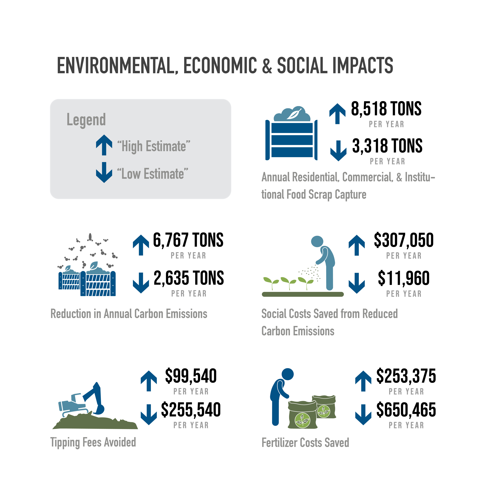
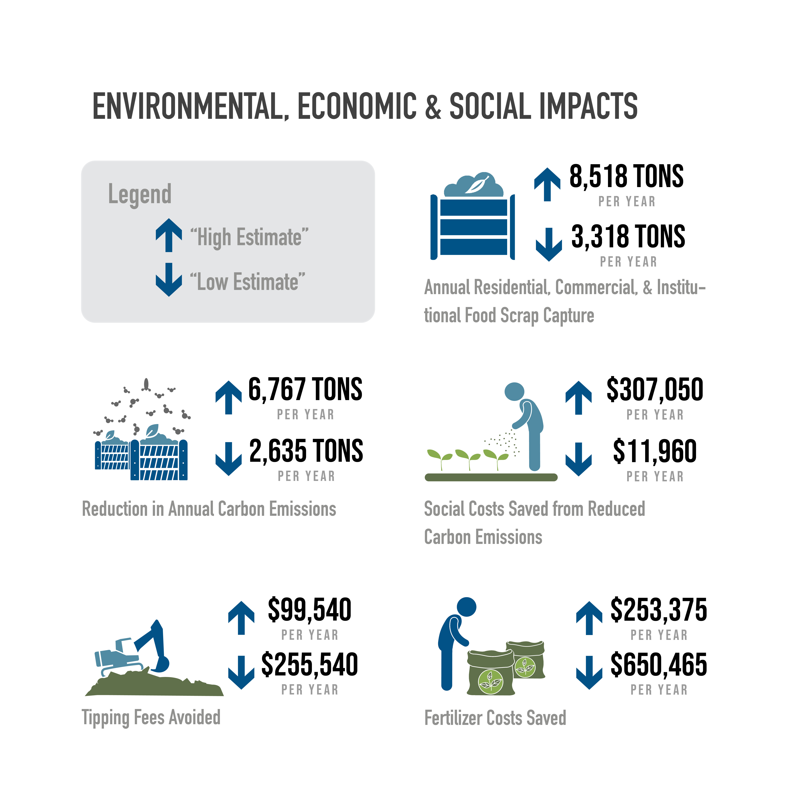
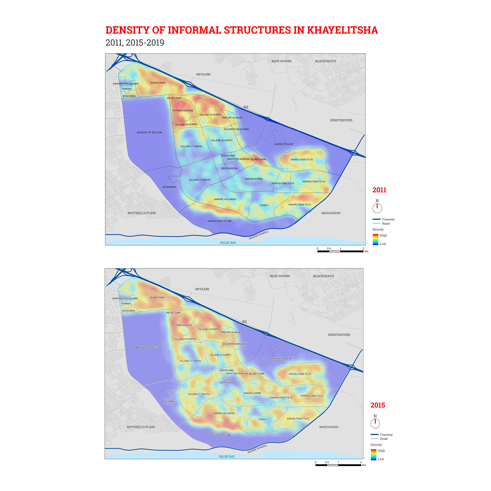
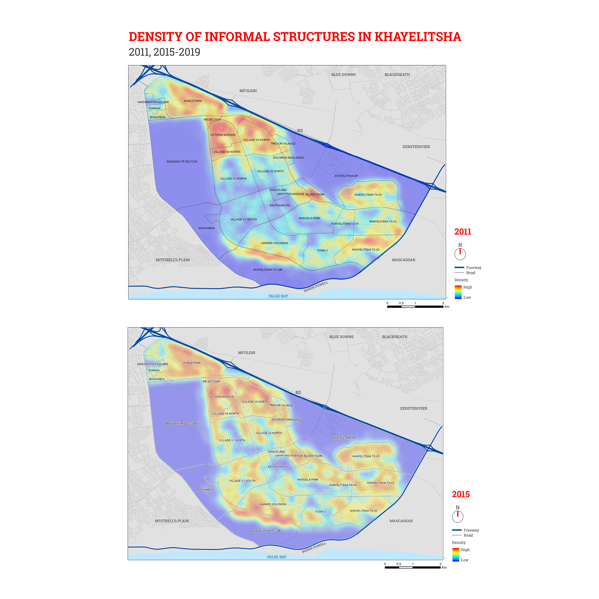

Capstone project: Envisioning a decentralized compost system for Detroit
Award: Outstanding Graduate Student Project Award for the 2021 Planing Excellence Awards, American Planning Association, Michigan Chapter
Location: Detroit, MI, USA
Advisors: Lesli Hoey and Eric Dueweke
Team members: Sean Burnett, David DeBoskey, Michael Friese, Emily Korman, Megan Rigney, Anikka Van Eyl, Keerthana Vidyasagar
Responsibility : GIS lead, contribute to spatial modeling, spatial analysis; Graphic and layout designer
Can compost be a mechanism for creating more sustainable and resilient communities? This is the central question guiding this project, the result of a partnership between University of Michigan students and FoodPLUS|Detroit. As part of a capstone course, the culmination of a Masters in Urban and Regional Planning program, our team set out to identify opportunities, recognize challenges, and create recommendations to help guide planners, policy-makers, and community members from Detroit and beyond looking to reduce waste and create more sustainable and resilient communities. A capstone course is a semester-long student-led, instructor-guided collaborative planning experience addressing real-world problems for a real-world client. The aim of a capstone is to mimic a professional work experience while being conducted as a learning experience.

 

Mapping Informality in Khayelitsha
Location: Cape Town, South Africa
Team members: Erin Cardwell, Jonathan Riley, Yujia Yang
Responsibility :Spatial and data analysi, graphic design, contextual inquiry
Khayelitsha is a peri-urban township situated on the outskirts of Cape Town. The most recent census was carried out in 2011 which reported a total number of 64,761 informal structures in areas designated orange in the above map. The outdated data does not illustrate the current situation in Khayelitsha. This mapping project aims to add on the scant of spatial analysis data by tracking the hot spots of informal structures and providing percentages of formal/informal building footprints. Maps and numbers generated from the process will be used to identify the trend of change in informal structures. With this knowledge acquired through spatial analysis, people would be able to further dig into the driving force of the increase of informal building footprint makeup.

 
